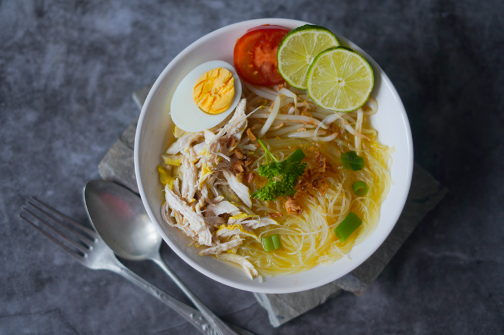

Soto Muar is a beloved traditional dish from Johor, known for its fragrant, clear broth made from a blend of spices such as coriander, cumin, turmeric, and galangal. It is commonly served with nasi impit, bean sprouts, vermicelli, and a generous topping of fried shallots and fresh herbs. The dish is incomplete without its signature begedil, which adds a soft and savoury element. With its light yet flavorful taste, Soto Muar remains a favourite comfort meal in Muar.
Soto Recipe
Bahan-bahan:
Bahan Rempah Tumis Kuah Soto:
43 biji bunga lawang.
2 batang kayu manis.
4 kuntum cengkih.
6 biji buah pelaga.
1 sudu besar jintan manis.
1 sudu besar jintan putih.
1 sudu besar serbuk lada putih atau lada sulah.
Bahan untuk Kisar:
5 biji bawang merah.
4 ulas bawang putih.
3 batang serai.
1 inci halia.
1 ketul kunyit hidup.
Bahan Kuah:
1/2 senduk minyak masak.
1 ekor ayam saiz sederhana kecil, potong 4.
1 mangkuk santan pekat.
1 jug air.
Bahan Untuk Dihidangkan Soto Ayam:
3-4 bungkus nasi impit, rebus sehingga masak dan potong dadu besar.
500 gram taugeh, bersihkan dan potong bahagian akar.
bawang goreng.
suhun, goreng hingga garing.
isi ayam goreng dari sup, dicarik halus.
daun sup, hiris kecil.
daun bawang, hiris kecil.
cili merah, hiris nipis.
kacang tanah, goreng dalam minyak.
begedil.
Bahan untuk kuah kicap bercili.
1 mangkuk kecil kicap manis.
10-15 biji cili padi.
5 ulas bawang putih.
2 biji limau kasturi.
Cara Penyediaan:
- Panaskan minyak masak, masukkan bahan tumis dan kacau sehingga naik bau dan
kemudian masukkan bahan kisar.Kacau dan masak rempah sehingga garing. - Masukkan ayam dan kacau selama 1-2 minit. Masukkan air, kiub ayam dan rebus sup sehingga
mendidih seketika.Masukkan pula santan pekat dan masak sehingga ayam lembut dan empuk. - Perasakan dengan garam dan gula secukup rasa.
- Angkat ketulan ayam dan gorengkan seketika sehingga kekuningan.
Sejukkan dan carik isi ayam. - Hidangkan dengan cara masukkan ketulan nasi impit, isi ayam,
taugeh, daun sup, cili merah, begedil, bawang goreng,
suhun goreng dan kacang tanah.Tuang kuah secukupnya. Soto harus dimakan bersama cili kicap.